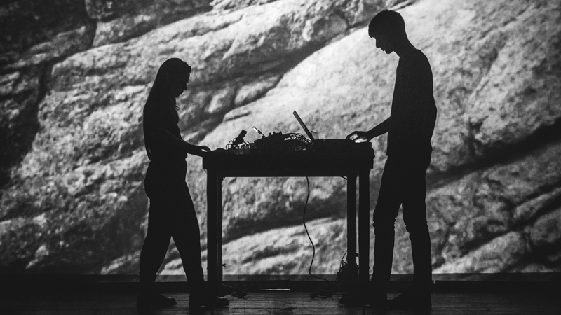

FOG- live A/V
Music by Grand River
Live visual art by Marco Ciceri
Live visual art by Marco Ciceri

After thousands of years of human existence, and even in the last 250 years when progress has accelerated significantly, the number of unknown things still remains immeasurably superior than what science has been able to explain so far. Humankind, as individuals and as a society, is led by the desire for knowledge in order to give meaning to what is unknown.
The exploration of undisclosed territories of knowledge is the way that one uses to reach a deeper understanding of oneself and the surrounding space.
By pushing the boundaries of rationality one can discover what lies in the mist of the unrevealed.
FOG is a live-performed audiovisual piece that explores the balance between the comfortable feeling of the known and the uncomfortable exploration of the limits of one’s incomprehension.

UPCOMING SHOWS
PAST SHOWS
Khidi - Tbilisi - Georgia Stereolux - Nantes - France Théâtre Hexagone - Meylan - France Barbican Centre London - UK WOS Festival - Santiago De Compostela - Spain NODE Festival - Modena - Italy Triennale Milano Teatro - Milan - Italy DAVE Festival - Dresden - Germany Tresor 31 Kraftwerk - Berlin - Germany


2021